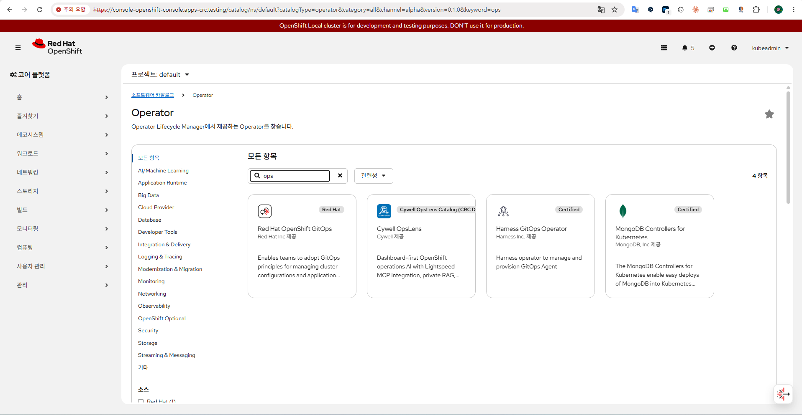
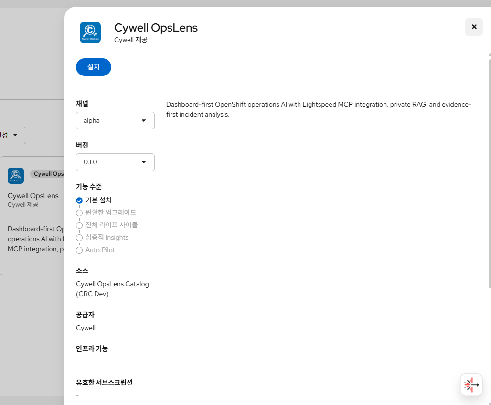
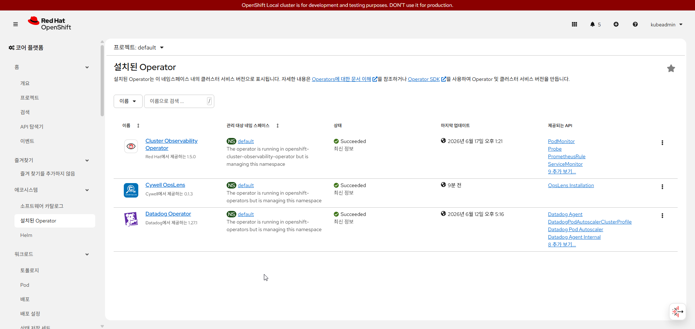
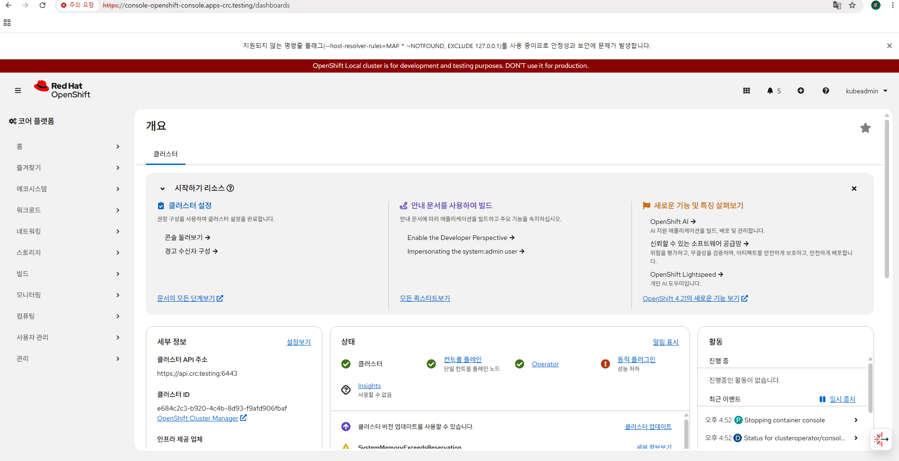
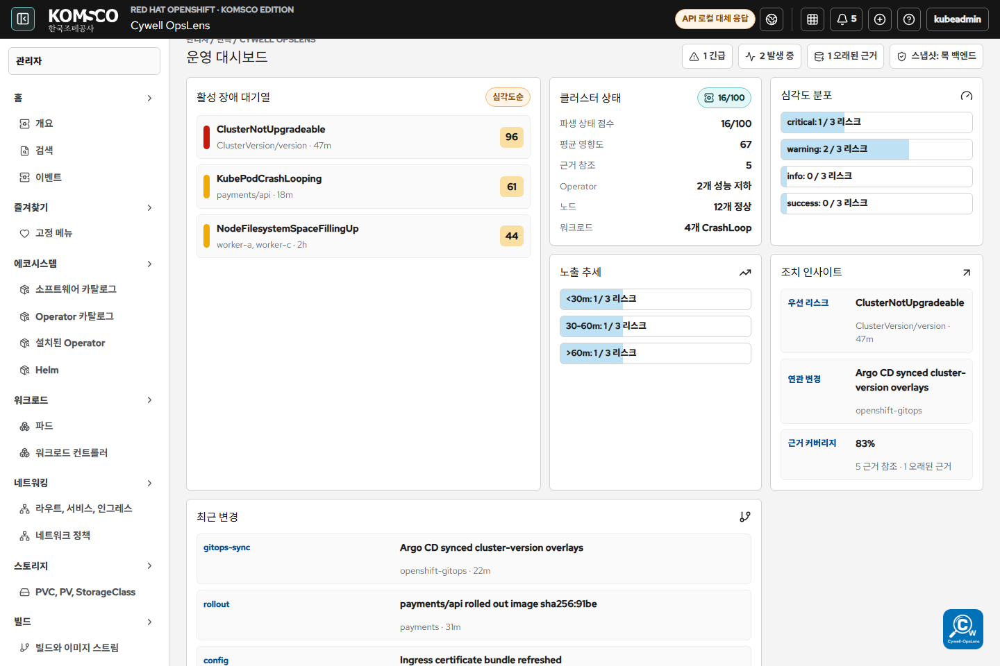
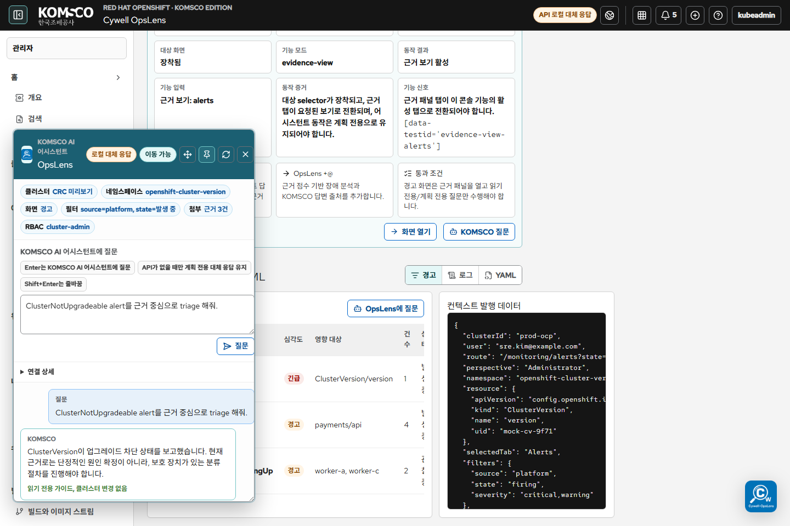

OCP 운영 콘솔 확장 가능성과 Cywell OpsLens 맞춤형 콘솔 모드
이번 PoC는 OpenShift Console과 OpenShift Lightspeed를 대체하는 것이 아니라, 공식 확장 경로 안에서 Cywell OpsLens가 어디까지 운영 기능을 확장할 수 있는지 확인한 작업입니다.
발표 핵심 가치
1. 콘솔 안에서 동작
별도 포털이 아니라 OpenShift Console 안의 메뉴와 full-page 화면으로 진입합니다.
2. 설치형 제품화
Software Catalog / OperatorHub에 등록하고 OLM으로 설치하는 제품 경로를 사용합니다.
3. Lightspeed plus alpha
native Lightspeed는 유지하고, OpsLens RAG/MCP/runbook으로 고객사 맞춤 답변을 강화합니다.
목표 아키텍처
기존 콘솔은 그대로 유지하고, Cywell OpsLens 진입점을 추가합니다.
Cywell OpsLens Operator를 등록하고 설치합니다.
Custom Resource가 API, dashboard, ConsolePlugin 적용의 선언 역할을 합니다.
좌측 메뉴와 full-page OpsLens 운영 콘솔 화면을 추가합니다.
OCP 리소스 조회, RAG 검색, 승인형 작업 계획, audit를 처리합니다.
REST API, BYO Knowledge, MCP server로 공식 답변과 고객사 고유 지식을 결합합니다.
팩트 판정
| 주장 | 판정 | 발표에서 쓸 정확한 표현 |
|---|---|---|
| OCP 웹콘솔 기능을 1:1 매치한 커스텀 모드 개발 | 가능 | 공식 ConsolePlugin 확장으로 기존 콘솔 기능을 기능 단위로 매핑하고, OpsLens 메뉴/페이지/탭/액션을 추가하는 운영 콘솔 모드를 개발할 수 있습니다. |
| OCP 안에서 제공되는 인앱 소프트웨어 활용 | 가능 | OpenShift에서는 이를 Operator, Software Catalog, OperatorHub 흐름으로 표현하는 것이 정확합니다. |
| Lightspeed 답변과 고객사 RAG 결합 | 가능 | Lightspeed BYO Knowledge와 custom MCP server로 고객사 runbook/RAG/운영 도구를 결합할 수 있습니다. |
| 챗봇이 읽기 전용을 넘어 쓰기 작업 수행 | 가능, 승인 필요 | MCP tool 또는 OpsLens API/Operator가 RBAC와 human approval을 통과한 뒤 OpenShift API에 변경을 수행하는 구조로 설계해야 합니다. |
| native Lightspeed drawer 완전 교체 | 표현 주의 | native drawer를 갈아끼우는 것이 아니라, native Lightspeed를 그대로 쓰고 OpsLens를 BYO Knowledge/MCP/ConsolePlugin으로 강화하는 것이 안전한 공식 방향입니다. |
가능 범위 대비 진행 요약
공식적으로 가능한 범위 전체를 production 수준으로 완성한 것은 아니지만, 설치형 콘솔 확장, 콘솔 진입, API 연결, Lightspeed 연결, Assistant UX, 승인형 쓰기 작업 방향까지는 프로젝트 단계별로 확인했습니다.
| 가능 범위 | 진행 상태 | 현재 프로젝트 근거 | 남은 작업 |
|---|---|---|---|
| Software Catalog / OperatorHub 등록 | 진행 완료 | Catalog card/detail 화면 증거, Operator package/CSV/catalog 구성 | 외부 배포용 인증/서명/Red Hat 제출은 별도 단계 |
| Operator 기반 설치 | 진행 완료 | Subscription, InstallPlan, CSV, CRD, OpsLensInstallation 흐름 확인 |
production upgrade/rollback 정책 고도화 |
| ConsolePlugin 기반 콘솔 진입 | 진행 완료 | OpenShift 좌측 메뉴 Cywell OpsLens, full-page dashboard, plugin route 계약 |
고객 cluster별 console customization 검토 |
| OCP 웹콘솔 기능 1:1 매핑 | 기반 완료 | OpenShift 4.21.14 console parity map, menu/function registry, Resource Explorer/Action Panel | 각 메뉴별 live behavior depth와 resource-specific visualization 확장 |
| OCP 리소스 read-only 조회 | 진행 완료 | live install status, Deployment/Pod/Route/OpsLensInstallation 조회, API connected 상태 | watch/poll freshness와 stale state 표시 강화 |
| Lightspeed REST API 연결 | 진행 완료 | ad740a08 Lightspeed console proxy 연결, 6180fb90 CRC network policy 근거 |
고객 cluster 네트워크 정책과 인증 경계 검토 |
| 고객사 RAG / BYO Knowledge 결합 | 구조 확인 | BYO Knowledge/MCP 공식 근거, OpsLens RAG/runbook 결합 방향 정리 | 실제 고객 문서 ingestion, 승인, 데이터 보안 정책 필요 |
| 쓰기 작업 / remediation 실행 | 방향 고정 | Dev 0.1.6 ActionPlan, RBAC preflight, approval, audit 설계 | allowlist executor, UI approval, post-action verification 구현 필요 |
공식 근거 기반으로 확인한 가능 범위
| 공식 기능 | 문서상 의미 | OpsLens 활용 범위 |
|---|---|---|
| OpenShift Web Console | 클러스터 운영, 관리, 문제 분석을 위한 공식 GUI입니다. | OpsLens는 외부 대시보드가 아니라 콘솔 내부 운영 지원 화면으로 포지셔닝합니다. |
| Dynamic ConsolePlugin | custom page, perspective, navigation item, resource tab/action 등을 런타임에 추가할 수 있습니다. | OCP 기능을 1:1 대응표로 매핑하고 Cywell 전용 운영 화면과 액션을 추가합니다. |
| ConsolePlugin service proxy | 콘솔 경유로 in-cluster service에 요청하고 UserToken을 전달할 수 있습니다. | OpsLens API, OCP resource 조회, Lightspeed REST 호출 경로를 콘솔 인증 체계에 연결합니다. |
| Software Catalog / OperatorHub | Operator를 검색하고 설치하는 공식 콘솔 경로입니다. | Cywell OpsLens를 Operator로 패키징해 설치형 제품으로 제공합니다. |
| OpenShift Lightspeed REST API | Lightspeed API의 supported/stable interface입니다. | OpsLens Assistant가 공식 Lightspeed 답변을 호출하고 자체 RAG와 결합할 수 있습니다. |
| Lightspeed BYO Knowledge | Markdown 기반 RAG DB를 추가해 조직 고유 지식을 답변에 반영합니다. | 고객사 runbook, 장애 매뉴얼, 운영 문서를 Lightspeed 답변에 결합합니다. |
| Lightspeed custom MCP server | 외부 tool/server를 등록해 LLM이 필요한 정보를 가져오거나 작업을 요청할 수 있습니다. | OpsLens를 MCP server로 제공해 read-only 조회, 분석, 승인형 쓰기 작업을 연결합니다. |
| Lightspeed operation approvals | non-read operation은 human-in-the-loop approval로 제어할 수 있습니다. | 챗봇 자동 변경이 아니라 분석 -> 변경안 -> 승인 -> 적용 흐름으로 설계합니다. |
기존 주간보고 기준 실제 작업 내용
- OCP 내부에서 운영 콘솔 기능을 어디까지 확장할 수 있는지 확인하기 위한 PoC 진행
- 임의의 운영 콘솔 확장 모드로
Cywell OpsLens구성 - Software Catalog / OperatorHub 등록 및 설치 흐름 검증
- Operator package, CSV, catalog, sample CR 구성
OpsLensInstallationCR을 통해 API, dashboard, ConsolePlugin 리소스 적용 구조 확인- ConsolePlugin 기반 좌측 메뉴 진입과 full-page OpsLens 화면 실행 방향 정리
- KOMSCO AI Assistant, 운영 대시보드, live install status, Resource Explorer, Admin 화면 개선
- CRC 경량 설치 프로파일 구성: in-memory vector store, mock-local model runtime, ValidateOnly Lightspeed registration
- OpenShift Lightspeed는 대체가 아니라 REST API, BYO Knowledge, MCP로 강화하는 방향으로 정리
- 쓰기 작업은 read-only 기본값 위에 approval-gated automation으로 확장 가능하다고 공식 근거 확인
실제 프로젝트 개발 단계
| 단계 | 목표 | 확인된 결과 | 남은 경계 |
|---|---|---|---|
| Dev 0.1.1 | CRC OperatorHub 설치 경로 증명 | CatalogSource, PackageManifest, Operator, CRD, OpsLensInstallation 흐름 확인 | 이미지 태그, arm64, 외부 런타임 조건 정리 필요 |
| Dev 0.1.2 | KOMSCO UI와 운영 화면 복구 | 브랜딩, 한글 UI, Assistant 이름, catalog icon, 고객용 문구 개선 | 내부 진단 정보와 고객용 정보 분리 필요 |
| Dev 0.1.3 | 공식 ConsolePlugin 방향 고정 | iframe/DOM injection/fake toggle 대신 left-nav + route 방향 정리 | 라이브 콘솔 진입 증거 강화 필요 |
| Dev 0.1.4 | OpenShift Console에서 OpsLens 실행 | 좌측 메뉴 Cywell OpsLens, full-page 로드, API 연결됨 확인 |
Assistant UX와 사용성 개선 필요 |
| Dev 0.1.5 | 발표 가능한 운영 콘솔 모드로 고도화 | 접이식 nav, 단일 active page, visual dashboard, movable KOMSCO AI Assistant, 발표자료/검증 게이트 완성 | 라이브 CRC 0.1.5 업그레이드, production runtime은 승인 필요 |
| Dev 0.1.6 | Agentic operations 확장 | live console mod, Lightspeed console proxy, CRC Lightspeed network policy 근거를 추가하고 ActionPlan/RBAC/approval/audit 기반 쓰기 작업 방향을 고정 | arbitrary shell execution, OLSConfig mutation, production vLLM/pgvector, 회사 OCP mutation은 제외 |
Lightspeed를 온전히 쓰면서 OpsLens plus alpha를 붙이는 방법
Native Lightspeed drawer 유지
OpenShift Lightspeed 기본 drawer는 OpenShift 소유 UI로 유지합니다. OpsLens는 이를 대체하지 않고, BYO Knowledge와 MCP server로 답변 능력을 확장합니다.
OpsLens Assistant 보조 UI
OpsLens ConsolePlugin 화면 안에서는 별도 KOMSCO AI Assistant를 띄우고, 필요 시 Lightspeed REST API와 OpsLens RAG/API를 함께 호출합니다.
| 연동 방식 | 목적 | 발표 표현 |
|---|---|---|
| Lightspeed REST API | OpsLens Assistant가 Lightspeed 공식 답변을 활용 | 공식 OpenShift 답변을 기반으로 OpsLens context를 결합합니다. |
| BYO Knowledge | 고객사 Markdown/RAG 문서를 Lightspeed 지식으로 추가 | 고객사 고유 runbook과 운영 매뉴얼을 답변 근거로 사용합니다. |
| Custom MCP server | OpsLens 도구를 Lightspeed에서 호출 | 장애 분석, read-only 조회, 승인형 작업 계획을 도구로 제공합니다. |
읽기 전용을 넘어 쓰기 작업도 가능한가
가능합니다. 다만 안전한 표현은 "챗봇이 직접 클러스터를 수정한다"가 아니라 "챗봇이 변경안을 만들고, 승인된 MCP tool 또는 OpsLens API/Operator가 RBAC와 audit 경계 안에서 적용한다"입니다.
Lightspeed/OpsLens가 현재 상태와 RAG 근거를 분석합니다.
scale, patch, CR 변경, Job 생성 등 실행 가능한 계획을 생성합니다.
non-read operation은 승인 요청을 거치도록 설계합니다.
사용자 또는 service account 권한으로 Kubernetes/OpenShift API 접근을 검증합니다.
Operator/API가 적용하고 결과, rollback, 감사 로그를 남깁니다.
연동에 필요한 인증과 토큰
| 용도 | 필요한 인증 | 주의점 |
|---|---|---|
| OpsLens ConsolePlugin 실행 | OpenShift web console 로그인 세션 | 별도 프론트엔드 token 저장을 피합니다. |
| OpsLens frontend -> OpsLens API | ConsolePlugin proxy + UserToken | 로그인 사용자의 OpenShift token을 proxy로 전달할 수 있습니다. |
| OpsLens API -> OCP API | ServiceAccount token 또는 user token passthrough + RBAC | 읽기/쓰기 범위는 RBAC로 제한합니다. |
| OpsLens -> Lightspeed REST API | OpenShift bearer token + ols-user 권한 |
일반적으로 별도 Lightspeed 사용자 토큰이 아니라 OpenShift token 기반입니다. |
| Lightspeed -> LLM provider | Provider API key를 담은 Secret | OpsLens가 직접 보관하지 않고 Lightspeed 설정 Secret으로 관리합니다. |
| Lightspeed -> OpsLens MCP | OLSConfig MCP server 인증 설정 | secret, kubernetes, client header 방식 중 선택합니다. |
| 고객사 RAG | BYO Knowledge image 또는 OpsLens DB credential | 고객사 데이터 권한과 문서 반출 정책을 별도로 관리해야 합니다. |
현재 검증 결과
| 검증 | 결과 | 의미 |
|---|---|---|
npm run verify:dev015-final-readiness |
0 fail / 14 checks | 발표 가능한 Dev 0.1.5 readiness, approval boundary, source hygiene 확인 |
npm run verify:dev015-acceptance |
0 fail / 16 checks | ConsolePlugin, dashboard, Assistant, Pages evidence, mutation boundary 확인 |
npm run verify:dev015-handoff |
0 fail / 0 warn / 14 checks | 발표 흐름, 증거 asset, 승인 경계, secret hygiene 확인 |
최신 Dev 0.1.6 커밋 근거
| Commit | 내용 | 발표에서 쓰는 의미 |
|---|---|---|
5745d238 |
Dev 0.1.6 live console mod 완성 | OpsLens가 실제 OCP 콘솔 기능을 더 살아있는 운영 모드로 확장하는 단계에 진입 |
ad740a08 |
Lightspeed를 console proxy 경로로 연결 | OpsLens Assistant가 Lightspeed를 공식 콘솔 경로 안에서 활용하는 구조 확인 |
6180fb90 |
CRC Lightspeed network policy 근거 문서화 | deployed OpsLens API -> in-cluster Lightspeed service 연결에서 필요한 네트워크 경계까지 확인 |
권장 발표 흐름: 10분
OCP 안에서 운영 콘솔을 어디까지 확장할 수 있는지 확인하는 PoC였다고 설명합니다.
ConsolePlugin, Software Catalog, OperatorHub, Lightspeed 확장 포인트를 보여줍니다.
Catalog -> Operator -> OpsLensInstallation -> ConsolePlugin -> full-page OpsLens를 설명합니다.
OCP 기능 1:1 매핑, Operator 활용, Lightspeed + RAG/MCP 결합, 승인형 쓰기 작업을 설명합니다.
Dev 0.1.1부터 Dev 0.1.6까지 진행 단계와 화면 캡처를 보여줍니다.
OpenShift를 대체하는 것이 아니라 공식 경로로 확장하는 고객사 맞춤형 운영 콘솔 모드라고 정리합니다.
그대로 읽을 결론 문장
이번 PoC의 핵심은 Cywell OpsLens가 OCP 콘솔 안에서 어디까지 활용될 수 있는지 확인하는 것이었습니다.
확인 결과, OpenShift가 공식 제공하는 ConsolePlugin을 사용하면 기존 OCP 웹콘솔 기능을 기능 단위로 1:1 매핑하고, 그 위에 Cywell 전용 운영 대시보드, 리소스 조회, Assistant, runbook 기반 분석 기능을 추가하는 커스텀 운영 콘솔 모드를 만들 수 있습니다.
또한 OCP Software Catalog / OperatorHub에 등록되는 Operator들을 활용할 수 있고, Cywell OpsLens 자체도 Operator로 패키징해 설치형 제품으로 제공할 수 있습니다.
챗봇 측면에서는 OpenShift Lightspeed를 대체하는 것이 아니라, Lightspeed를 온전히 사용하면서 BYO Knowledge와 MCP server를 통해 고객사 고유 RAG 문서, 운영 runbook, 장애 분석 도구를 결합할 수 있습니다.
따라서 제품 방향은 OpenShift를 바꾸는 별도 콘솔이 아니라, OpenShift Console과 Lightspeed를 공식 확장 경로로 강화하는 고객사 맞춤형 운영 콘솔 모드입니다.화면 증거






공식 근거 링크
| 근거 | 링크 | 발표에 쓰는 의미 |
|---|---|---|
| OpenShift Web Console overview | docs.redhat.com OpenShift Web Console | OpenShift Console은 공식 운영 GUI입니다. |
| OpenShift Dynamic Plugins | docs.redhat.com Dynamic Plugins | custom page, navigation item, tab/action, proxy 확장 근거입니다. |
| OpenShift Console customization | docs.redhat.com Console Customization | 공식 branding/customization 범위를 구분합니다. |
| OpenShift Operators | docs.redhat.com Operators | 인앱 소프트웨어는 Operator/OperatorHub로 표현하는 것이 정확합니다. |
| OpenShift Lightspeed product | developers.redhat.com OpenShift Lightspeed | Lightspeed는 OpenShift Console에 통합되는 AI assistant입니다. |
| Lightspeed REST API | docs.redhat.com Lightspeed REST API | OpsLens Assistant가 Lightspeed 답변을 호출하는 공식 API 근거입니다. |
| Lightspeed configuration | docs.redhat.com Lightspeed Configure | LLM provider Secret, BYO Knowledge, MCP server, operation approval 근거입니다. |
| OpenShift Console Dynamic Plugin SDK | OpenShift console SDK | upstream SDK 레벨에서 plugin extension 모델을 확인할 수 있습니다. |
주의: MCP server, BYO Knowledge, operation approval은 OpenShift Lightspeed 버전과 배포 형태에 따라 Technology Preview 또는 approval-gated 범위일 수 있으므로 production 적용 전 별도 확인이 필요합니다.